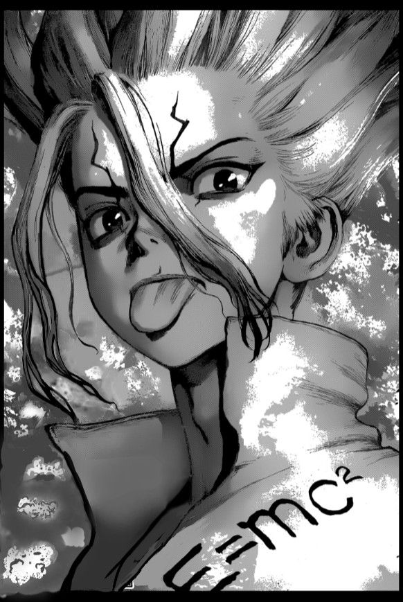
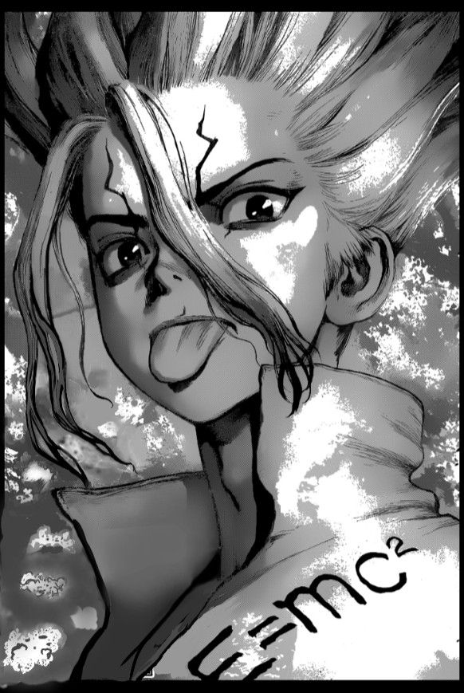
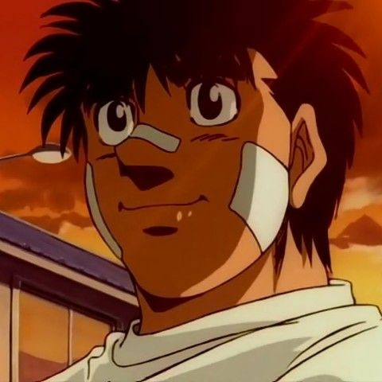
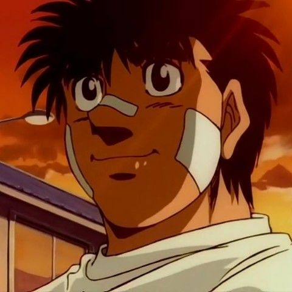
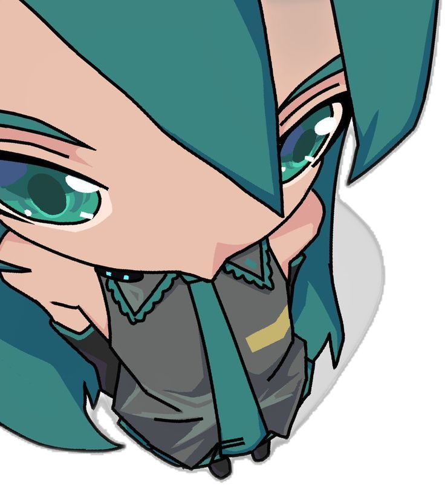
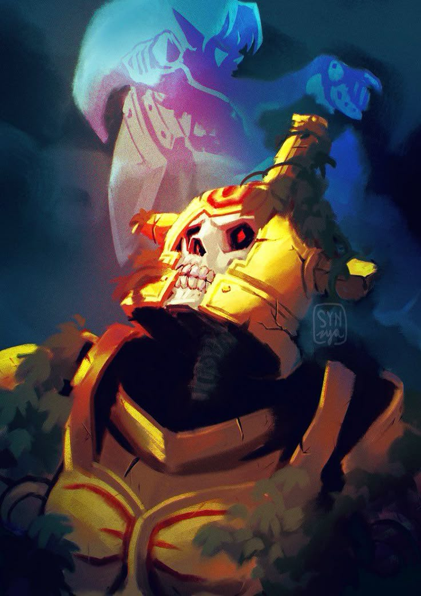
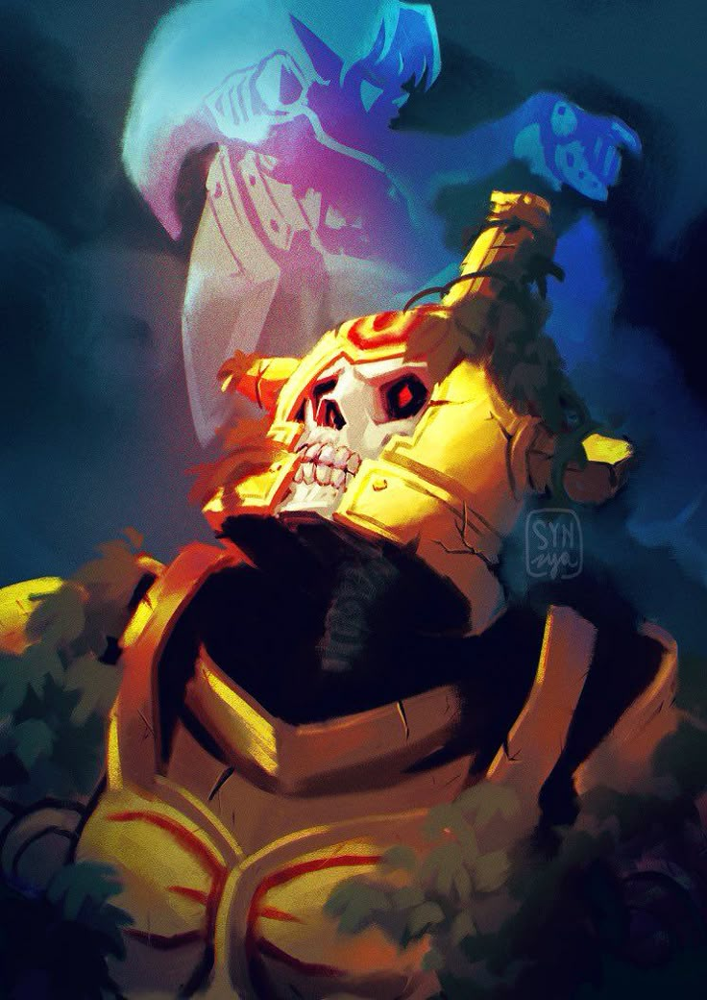
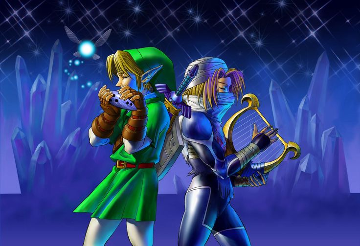
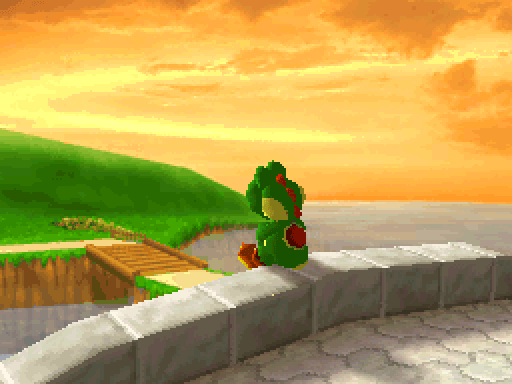
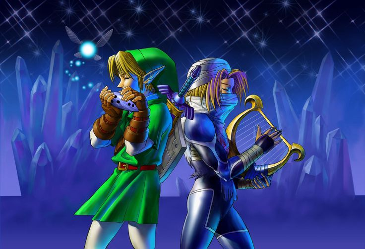

Le pregunte a las personas con las que normalmente convivo quienes son Bryan, Brenda, Diego y casualmente Roger
Bryan
Por dónde empezar mi hermano, sos eso ya básicamente un hermano, todo lo que una amistad debería significar carajo,
en lo económico, sentimental o con problemas personales siempre estás ahí mano, si quieres una palabra pa describirte sería imposible son tantas
cosas buenas tuyas, Cómo persona, Lealtad encuentro con vos, nunca me has fallado pa, aunque yo lo haga. Auténtico, sos único en todo lo que
haces, hasta tu página web 👻👻. Amoroso diría pa, xddd es una mmd pero con todo lo que haces por la chavala no podría decir que no sos así.
Cómo hermano/amigo: difícil hermano elegir que te describe, compatibles con nuestro sentido del humor, me haces sentir en confianza hasta te
cuento todo lo que pasa 👀👀 tu apoyo que siempre me das pa, y aunque la mayoría de veces nos la pasemos hablando pura cagada, alch cuando son
temas enserio siempre tas ahí pa escuchar pa. P.D. disculpa la mala redacción, este día si duermo pa, me gana el sueño que no he dormido.....
👀 Espero todo bien wn pa que hayas pedido esto, y sabes que siempre estoy ahí pa ute bro...

Por dónde empezar mi hermano, sos eso ya básicamente un hermano, todo lo que una amistad debería significar carajo, en lo económico, sentimental o con problemas personales siempre estás ahí mano, si quieres una palabra pa describirte sería imposible son tantas cosas buenas tuyas, Cómo persona, Lealtad encuentro con vos, nunca me has fallado pa, aunque yo lo haga. Auténtico, sos único en todo lo que haces, hasta tu página web 👻👻. Amoroso diría pa, xddd es una mmd pero con todo lo que haces por la chavala no podría decir que no sos así. Cómo hermano/amigo: difícil hermano elegir que te describe, compatibles con nuestro sentido del humor, me haces sentir en confianza hasta te cuento todo lo que pasa 👀👀 tu apoyo que siempre me das pa, y aunque la mayoría de veces nos la pasemos hablando pura cagada, alch cuando son temas enserio siempre tas ahí pa escuchar pa. P.D. disculpa la mala redacción, este día si duermo pa, me gana el sueño que no he dormido..... 👀 Espero todo bien wn pa que hayas pedido esto, y sabes que siempre estoy ahí pa ute bro...
Brenda

Cómo un gran amigo, que sabe escuchar y de sentimientos muy nobles, amante de los gatos pero comete
preferencias en sus mascotas, cariñoso de cierta forma a tu manera, en pocas palabras eres como el día que no siempre está deslumbrante
Pero hace lo imposible por seguir y brillar, con días adversos Pero manteniendo la calma y tu brillo, claro que como el día caes en momentos
oscuros (o tu color jajaja) pero sabes salir y ser tu propia luz, y eso se refleja en ti, tu personalidad es agradable medio loca por no decir
otra cosa pero eres una gran persona con un gran potencial que OJALA, OJALA se llegue a dar cuenta pero de verdad del gran potencial que tiene.
Cómo un gran amigo, que sabe escuchar y de sentimientos muy nobles, amante de los gatos pero comete preferencias en sus mascotas, cariñoso de cierta forma a tu manera, en pocas palabras eres como el día que no siempre está deslumbrante Pero hace lo imposible por seguir y brillar, con días adversos Pero manteniendo la calma y tu brillo, claro que como el día caes en momentos oscuros (o tu color jajaja) pero sabes salir y ser tu propia luz, y eso se refleja en ti, tu personalidad es agradable medio loca por no decir otra cosa pero eres una gran persona con un gran potencial que OJALA, OJALA se llegue a dar cuenta pero de verdad del gran potencial que tiene.
Diego
Chetix sos muy hablador, siempre alegre, re inteligente, dedicado a lo que ama, transparente como el agua y, sinceramente, una persona única en su especie.

Chetix sos muy hablador, siempre alegre, re inteligente, dedicado a lo que ama, transparente como el agua y, sinceramente, una persona única en su especie.
Roger
Pendejo, Mamon y Gei
Gabriel
Me pone feliz la verdad saber que mis amigos me ven de esa manera, las personas a las que le he hablado de ti mayormente a Bryan es mi mejor amigo y le estuve comentado respecto a la pagina
Brenda me ayudo en el apartado de la patela de colores ya que mi teoría de los colores no es la mejor, los únicos que no saben acerca de esto es Roger y Diego.
Es agradable ver como las personas con las que convivo la mayor parte del tiempo hablan de mí, yo simplemente existo y muchas veces pienso que lo estoy haciendo todo mal, moriría olvidado y quizás con arrepentimientos, pero palabras de ellos diciendo como me ven me alivia y me motivan a continuar.

Me pone feliz la verdad saber que mis amigos me ven de esa manera, las personas a las que le he hablado de ti mayormente a Bryan es mi mejor amigo y le estuve comentado respecto a la pagina Brenda me ayudo en el apartado de la patela de colores ya que mi teoría de los colores no es la mejor, los únicos que no saben acerca de esto es Roger y Diego. Es agradable ver como las personas con las que convivo la mayor parte del tiempo hablan de mí, yo simplemente existo y muchas veces pienso que lo estoy haciendo todo mal, moriría olvidado y quizás con arrepentimientos, pero palabras de ellos diciendo como me ven me alivia y me motivan a continuar.

El paso del tiempo es siempre cruel. Parece que va a un ritmo diferente para cada persona, pero, nadie puede hacer nada
para cambiarlo... una cosa que no se desvanece con el tiempo... son los recuerdos de la juventud.
-Sheik
Los Recuerdos
Puede que el significado sea el mismo para todos o no, siempre busco algo de seguridad en mis recuerdos del
ayer, recordarme lo que he pasado y como lo he superado puede que no siempre sea fácil, pero es importante recordar el valor que tenemos como
personas, si lo hice antes que me impide de hacerlo ahora. Aunque también no creo que todo esté ya escrito en nuestra vida, pienso que nosotros la escribimos
al final tomamos decisiones y conforme las realizamos superamos esas inquietudes del ayer.

-Sheik
Puede que el significado sea el mismo para todos o no, siempre busco algo de seguridad en mis recuerdos del ayer, recordarme lo que he pasado y como lo he superado puede que no siempre sea fácil, pero es importante recordar el valor que tenemos como personas, si lo hice antes que me impide de hacerlo ahora. Aunque también no creo que todo esté ya escrito en nuestra vida, pienso que nosotros la escribimos al final tomamos decisiones y conforme las realizamos superamos esas inquietudes del ayer.